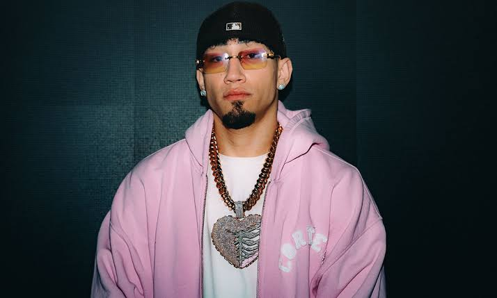

Perfil del Artista
Eduardo OBR, conocido en la industria como Omar Courtz (o por su frase distintiva OOUA), es una de las promesas con mayor proyección en la música urbana de Puerto Rico.

La nueva energía de la escena urbana puertorriqueña.
Eduardo OBR, conocido en la industria como Omar Courtz (o por su frase distintiva OOUA), es una de las promesas con mayor proyección en la música urbana de Puerto Rico.
